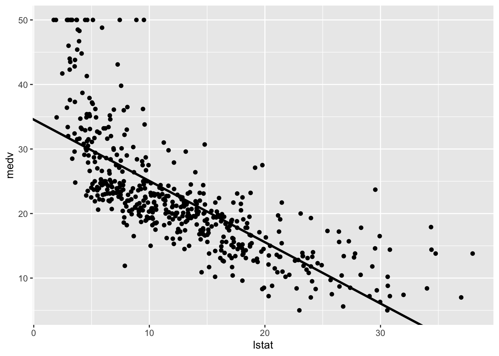
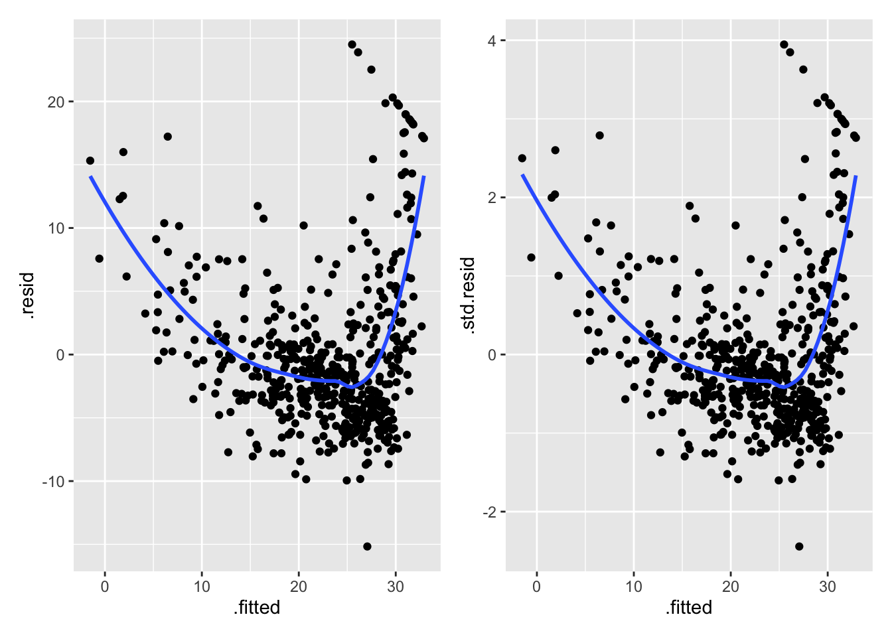
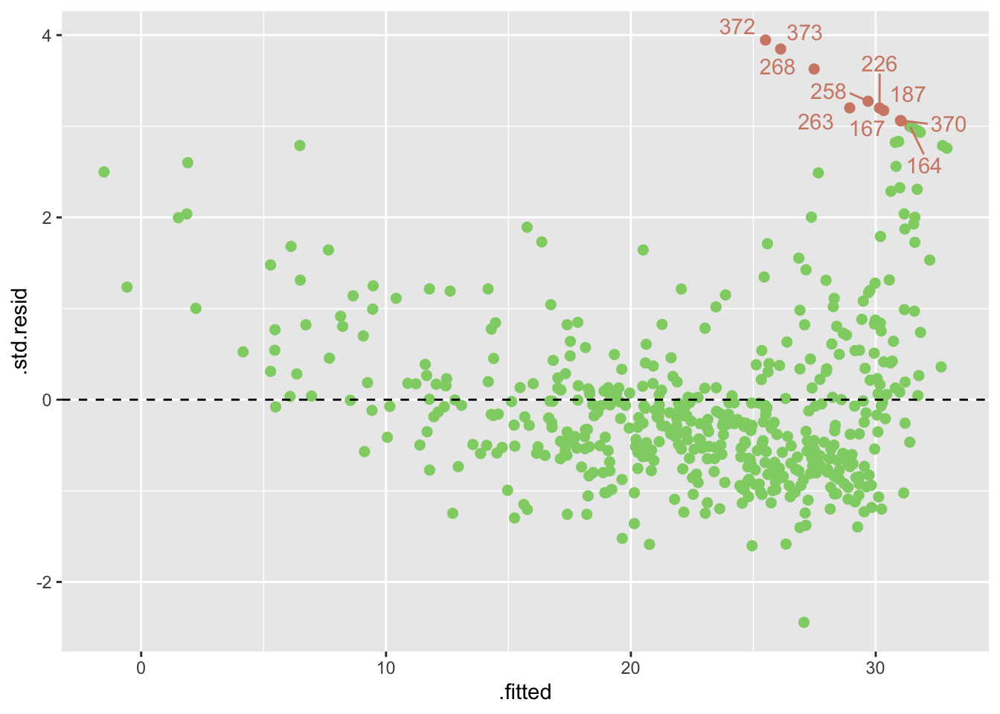
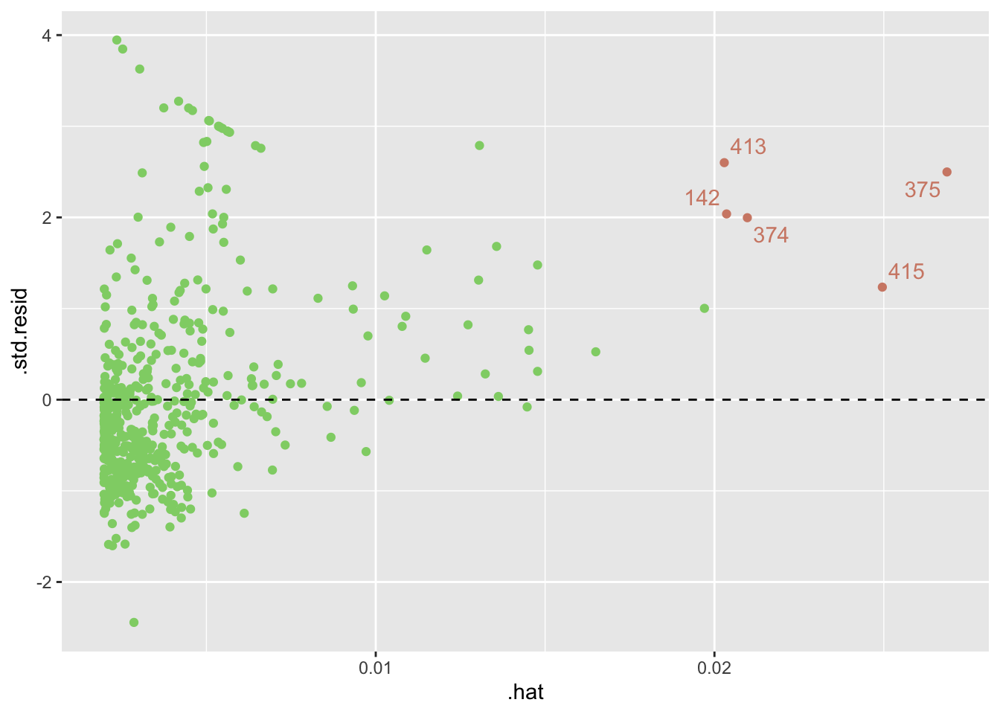
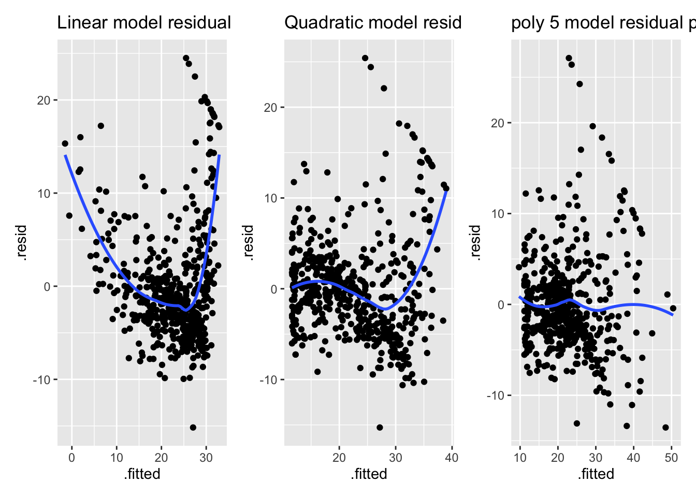
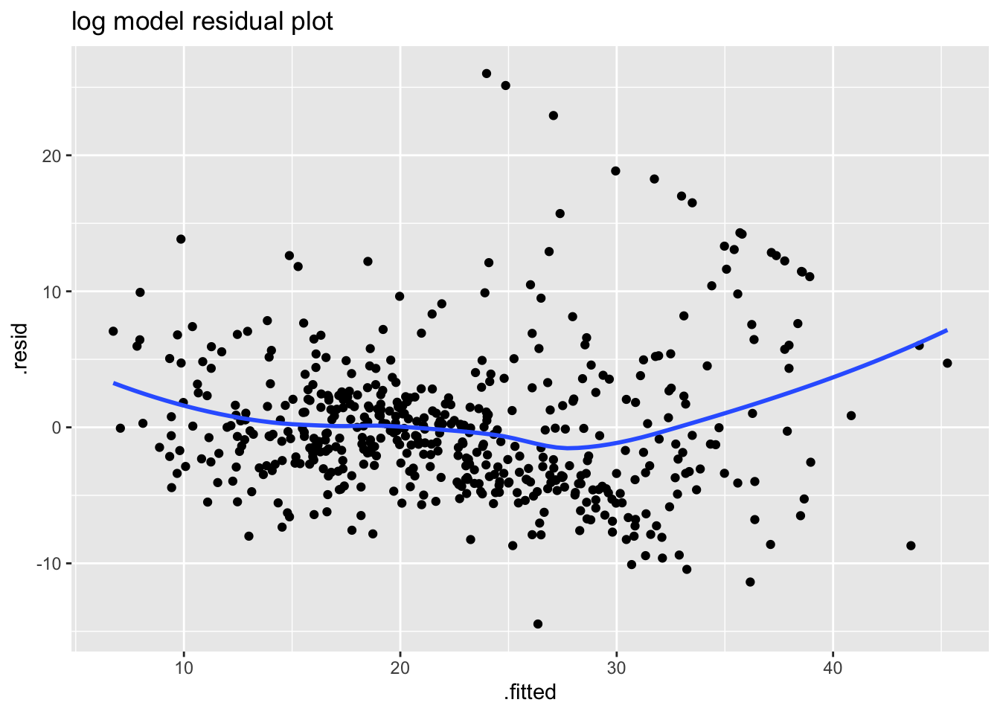

suppressPackageStartupMessages({
library(tidyverse)
library(tidymodels)
library(hrbrthemes)
library(patchwork)
library(magrittr)
library(corrplot)
})
theme_set(theme_ipsum_ps(axis_title_size = 11 , axis_title_just = "c") + theme(axis.line = element_line(color ="black")))3 Exercise
3.1 SLR
data = MASS::Boston
data %<>% as_tibble() %>% print()# A tibble: 506 × 14
crim zn indus chas nox rm age dis rad tax ptratio black
<dbl> <dbl> <dbl> <int> <dbl> <dbl> <dbl> <dbl> <int> <dbl> <dbl> <dbl>
1 0.00632 18 2.31 0 0.538 6.58 65.2 4.09 1 296 15.3 397.
2 0.0273 0 7.07 0 0.469 6.42 78.9 4.97 2 242 17.8 397.
3 0.0273 0 7.07 0 0.469 7.18 61.1 4.97 2 242 17.8 393.
4 0.0324 0 2.18 0 0.458 7.00 45.8 6.06 3 222 18.7 395.
5 0.0690 0 2.18 0 0.458 7.15 54.2 6.06 3 222 18.7 397.
6 0.0298 0 2.18 0 0.458 6.43 58.7 6.06 3 222 18.7 394.
7 0.0883 12.5 7.87 0 0.524 6.01 66.6 5.56 5 311 15.2 396.
8 0.145 12.5 7.87 0 0.524 6.17 96.1 5.95 5 311 15.2 397.
9 0.211 12.5 7.87 0 0.524 5.63 100 6.08 5 311 15.2 387.
10 0.170 12.5 7.87 0 0.524 6.00 85.9 6.59 5 311 15.2 387.
# ℹ 496 more rows
# ℹ 2 more variables: lstat <dbl>, medv <dbl>We are going to predict medv(median house value) in Boston, using 13 predictors such as rm(average number of rooms per house), age(avarege age of houses), and lstat (percent of household with low socioeconomics status).
Do a linear regression of lstat on medv
linear_reg() %>%
set_mode("regression") %>%
set_engine("lm") %>%
fit(medv ~ lstat, data) %>%
pluck("fit") -> slr_res
slr_res %>% summary()
Call:
stats::lm(formula = medv ~ lstat, data = data)
Residuals:
Min 1Q Median 3Q Max
-15.168 -3.990 -1.318 2.034 24.500
Coefficients:
Estimate Std. Error t value Pr(>|t|)
(Intercept) 34.55384 0.56263 61.41 <2e-16 ***
lstat -0.95005 0.03873 -24.53 <2e-16 ***
---
Signif. codes: 0 '***' 0.001 '**' 0.01 '*' 0.05 '.' 0.1 ' ' 1
Residual standard error: 6.216 on 504 degrees of freedom
Multiple R-squared: 0.5441, Adjusted R-squared: 0.5432
F-statistic: 601.6 on 1 and 504 DF, p-value: < 2.2e-16slr_res %>% names() [1] "coefficients" "residuals" "effects" "rank"
[5] "fitted.values" "assign" "qr" "df.residual"
[9] "xlevels" "call" "terms" "model" Get the confidence intervals
slr_res %>% confint() %>% print() 2.5 % 97.5 %
(Intercept) 33.448457 35.6592247
lstat -1.026148 -0.8739505slr_res %>% dotwhisker::dwplot()Lets do some predictions from this model. Lets create predictions for cases when lstat is equal to 5,10, and 15. We can use predict function for this. Here is a confidence interval for our p
slr_res %>%
predict(., tibble(lstat = c(5,10,15)), interval = "confidence") fit lwr upr
1 29.80359 29.00741 30.59978
2 25.05335 24.47413 25.63256
3 20.30310 19.73159 20.87461slr_res %>%
predict(., tibble(lstat = c(5,10,15)), interval = "prediction") fit lwr upr
1 29.80359 17.565675 42.04151
2 25.05335 12.827626 37.27907
3 20.30310 8.077742 32.52846Lets plot medv and lstat along with the least squares regression line.
We can either:
plot(data$medv, data$lstat)
abline(slr_res)slr_res %>% augment %>% print() %>%
ggplot() + aes(x = lstat, y = medv) +
geom_point() +
geom_abline(intercept = slr_res$coefficients[1], slope = slr_res$coefficients[2], size =1.1)# A tibble: 506 × 8
medv lstat .fitted .resid .hat .sigma .cooksd .std.resid
<dbl> <dbl> <dbl> <dbl> <dbl> <dbl> <dbl> <dbl>
1 24 4.98 29.8 -5.82 0.00426 6.22 0.00189 -0.939
2 21.6 9.14 25.9 -4.27 0.00246 6.22 0.000582 -0.688
3 34.7 4.03 30.7 3.97 0.00486 6.22 0.00100 0.641
4 33.4 2.94 31.8 1.64 0.00564 6.22 0.000198 0.264
5 36.2 5.33 29.5 6.71 0.00406 6.21 0.00238 1.08
6 28.7 5.21 29.6 -0.904 0.00413 6.22 0.0000440 -0.146
7 22.9 12.4 22.7 0.155 0.00198 6.22 0.000000620 0.0250
8 27.1 19.2 16.4 10.7 0.00362 6.20 0.00544 1.73
9 16.5 29.9 6.12 10.4 0.0136 6.20 0.0194 1.68
10 18.9 17.1 18.3 0.592 0.00274 6.22 0.0000125 0.0954
# ℹ 496 more rowsWarning: Using `size` aesthetic for lines was deprecated in ggplot2 3.4.0.
ℹ Please use `linewidth` instead.
This looks like not a linear relationship actually; lets confirm this with our residual plot. Since this is a SLR i can plot \(x\) vs \(e_i\).
slr_res %>% augment %>% print() %>%
ggplot() + aes(x = .fitted, y = .resid) + geom_point() + geom_smooth(se=F) -> p1# A tibble: 506 × 8
medv lstat .fitted .resid .hat .sigma .cooksd .std.resid
<dbl> <dbl> <dbl> <dbl> <dbl> <dbl> <dbl> <dbl>
1 24 4.98 29.8 -5.82 0.00426 6.22 0.00189 -0.939
2 21.6 9.14 25.9 -4.27 0.00246 6.22 0.000582 -0.688
3 34.7 4.03 30.7 3.97 0.00486 6.22 0.00100 0.641
4 33.4 2.94 31.8 1.64 0.00564 6.22 0.000198 0.264
5 36.2 5.33 29.5 6.71 0.00406 6.21 0.00238 1.08
6 28.7 5.21 29.6 -0.904 0.00413 6.22 0.0000440 -0.146
7 22.9 12.4 22.7 0.155 0.00198 6.22 0.000000620 0.0250
8 27.1 19.2 16.4 10.7 0.00362 6.20 0.00544 1.73
9 16.5 29.9 6.12 10.4 0.0136 6.20 0.0194 1.68
10 18.9 17.1 18.3 0.592 0.00274 6.22 0.0000125 0.0954
# ℹ 496 more rowsslr_res %>% augment %>% print() %>%
ggplot() + aes(x = .fitted, y = .std.resid) + geom_point() + geom_smooth(se=F) -> p2# A tibble: 506 × 8
medv lstat .fitted .resid .hat .sigma .cooksd .std.resid
<dbl> <dbl> <dbl> <dbl> <dbl> <dbl> <dbl> <dbl>
1 24 4.98 29.8 -5.82 0.00426 6.22 0.00189 -0.939
2 21.6 9.14 25.9 -4.27 0.00246 6.22 0.000582 -0.688
3 34.7 4.03 30.7 3.97 0.00486 6.22 0.00100 0.641
4 33.4 2.94 31.8 1.64 0.00564 6.22 0.000198 0.264
5 36.2 5.33 29.5 6.71 0.00406 6.21 0.00238 1.08
6 28.7 5.21 29.6 -0.904 0.00413 6.22 0.0000440 -0.146
7 22.9 12.4 22.7 0.155 0.00198 6.22 0.000000620 0.0250
8 27.1 19.2 16.4 10.7 0.00362 6.20 0.00544 1.73
9 16.5 29.9 6.12 10.4 0.0136 6.20 0.0194 1.68
10 18.9 17.1 18.3 0.592 0.00274 6.22 0.0000125 0.0954
# ℹ 496 more rowsp1 + p2`geom_smooth()` using method = 'loess' and formula = 'y ~ x'
`geom_smooth()` using method = 'loess' and formula = 'y ~ x'
Our suspicions are true, it looks like there may not be a linear relationship, this shows a quadratic relationship.
Our leverage statistics are given in the .hat column, but we can also get them using hatvalues
plot(hatvalues(slr_res))which.max(hatvalues(slr_res))375
375 Lets check the outliers by plotting standardized residuals vs fitted
slr_res %>%
augment() %>%
mutate(id = 1:506) %>%
filter(abs(.std.resid) > 3) %>%
select(id,.std.resid) %>% print() %>%
pull("id") -> outliers# A tibble: 10 × 2
id .std.resid
<int> <dbl>
1 164 3.00
2 167 3.06
3 187 3.17
4 226 3.20
5 258 3.27
6 263 3.20
7 268 3.63
8 370 3.06
9 372 3.95
10 373 3.85# visualize the outliers
slr_res %>%
augment() %>%
mutate(id = 1:506) %>%
ggplot() + aes(y =.std.resid, x = .fitted, color = ifelse(abs(.std.resid) > 3, F,T)) + geom_point(size =2, show.legend = F) + geom_hline(yintercept = 0, linetype = "dashed") +
ggrepel::geom_text_repel(aes(label = ifelse(abs(.std.resid) > 3,id,"")), max.overlaps = 100, show.legend = F) + scale_color_ipsum()
Leverage points: we plot std res vs leverage
slr_res %>%
augment() %>% mutate(id = 1:506) %>%
filter(.hat > 0.02) %>%
select(id, .std.resid,.hat) %>%
print() %>% pull("id") -> highlevgs# A tibble: 5 × 3
id .std.resid .hat
<int> <dbl> <dbl>
1 142 2.04 0.0204
2 374 2.00 0.0210
3 375 2.50 0.0269
4 413 2.60 0.0203
5 415 1.23 0.0250# high leverage points
slr_res %>%
augment() %>% mutate(id = 1:506) %>%
ggplot() + aes(x=.hat, y = .std.resid, color = ifelse(.hat > 0.02,F,T)) + geom_point(show.legend = F) + geom_hline(yintercept =0, linetype = "dashed") +
ggrepel::geom_text_repel(aes(label = ifelse(.hat > 0.02,id,"")), show.legend = F) +scale_color_ipsum()
slr_res %>% summary() %>% print()
Call:
stats::lm(formula = medv ~ lstat, data = data)
Residuals:
Min 1Q Median 3Q Max
-15.168 -3.990 -1.318 2.034 24.500
Coefficients:
Estimate Std. Error t value Pr(>|t|)
(Intercept) 34.55384 0.56263 61.41 <2e-16 ***
lstat -0.95005 0.03873 -24.53 <2e-16 ***
---
Signif. codes: 0 '***' 0.001 '**' 0.01 '*' 0.05 '.' 0.1 ' ' 1
Residual standard error: 6.216 on 504 degrees of freedom
Multiple R-squared: 0.5441, Adjusted R-squared: 0.5432
F-statistic: 601.6 on 1 and 504 DF, p-value: < 2.2e-16linear_reg() %>%
set_mode("regression") %>%
set_engine("lm") %>%
fit(medv ~ lstat, data[-c(outliers,highlevgs),]) %>%
pluck("fit") %>%
summary()
Call:
stats::lm(formula = medv ~ lstat, data = data)
Residuals:
Min 1Q Median 3Q Max
-14.633 -3.465 -1.012 1.937 19.060
Coefficients:
Estimate Std. Error t value Pr(>|t|)
(Intercept) 34.0494 0.5110 66.63 <2e-16 ***
lstat -0.9538 0.0358 -26.64 <2e-16 ***
---
Signif. codes: 0 '***' 0.001 '**' 0.01 '*' 0.05 '.' 0.1 ' ' 1
Residual standard error: 5.376 on 489 degrees of freedom
Multiple R-squared: 0.5921, Adjusted R-squared: 0.5912
F-statistic: 709.7 on 1 and 489 DF, p-value: < 2.2e-16Removing high leverages and outliers improeves our result.
3.2 Multiple linear Regression
\[ medv = \beta_0 + \beta_1 lstat + \beta_2 age \]
linear_reg() %>%
set_mode("regression") %>%
set_engine("lm") %>%
fit(medv ~ lstat + age, data) %>%
pluck("fit") %>%
summary()
Call:
stats::lm(formula = medv ~ lstat + age, data = data)
Residuals:
Min 1Q Median 3Q Max
-15.981 -3.978 -1.283 1.968 23.158
Coefficients:
Estimate Std. Error t value Pr(>|t|)
(Intercept) 33.22276 0.73085 45.458 < 2e-16 ***
lstat -1.03207 0.04819 -21.416 < 2e-16 ***
age 0.03454 0.01223 2.826 0.00491 **
---
Signif. codes: 0 '***' 0.001 '**' 0.01 '*' 0.05 '.' 0.1 ' ' 1
Residual standard error: 6.173 on 503 degrees of freedom
Multiple R-squared: 0.5513, Adjusted R-squared: 0.5495
F-statistic: 309 on 2 and 503 DF, p-value: < 2.2e-16Lets do a regression including all varaibles
linear_reg() %>%
set_mode("regression") %>%
set_engine("lm") %>%
fit(medv~., data) %>%
pluck("fit") -> mlr
mlr %>% summary()
Call:
stats::lm(formula = medv ~ ., data = data)
Residuals:
Min 1Q Median 3Q Max
-15.595 -2.730 -0.518 1.777 26.199
Coefficients:
Estimate Std. Error t value Pr(>|t|)
(Intercept) 3.646e+01 5.103e+00 7.144 3.28e-12 ***
crim -1.080e-01 3.286e-02 -3.287 0.001087 **
zn 4.642e-02 1.373e-02 3.382 0.000778 ***
indus 2.056e-02 6.150e-02 0.334 0.738288
chas 2.687e+00 8.616e-01 3.118 0.001925 **
nox -1.777e+01 3.820e+00 -4.651 4.25e-06 ***
rm 3.810e+00 4.179e-01 9.116 < 2e-16 ***
age 6.922e-04 1.321e-02 0.052 0.958229
dis -1.476e+00 1.995e-01 -7.398 6.01e-13 ***
rad 3.060e-01 6.635e-02 4.613 5.07e-06 ***
tax -1.233e-02 3.760e-03 -3.280 0.001112 **
ptratio -9.527e-01 1.308e-01 -7.283 1.31e-12 ***
black 9.312e-03 2.686e-03 3.467 0.000573 ***
lstat -5.248e-01 5.072e-02 -10.347 < 2e-16 ***
---
Signif. codes: 0 '***' 0.001 '**' 0.01 '*' 0.05 '.' 0.1 ' ' 1
Residual standard error: 4.745 on 492 degrees of freedom
Multiple R-squared: 0.7406, Adjusted R-squared: 0.7338
F-statistic: 108.1 on 13 and 492 DF, p-value: < 2.2e-16Lets calculate the VIF values
mlr %>% car::vif() crim zn indus chas nox rm age dis
1.792192 2.298758 3.991596 1.073995 4.393720 1.933744 3.100826 3.955945
rad tax ptratio black lstat
7.484496 9.008554 1.799084 1.348521 2.941491 age has the highest p-value, lets remove that from the regression
linear_reg() %>%
set_mode("regression") %>%
set_engine("lm") %>%
fit(medv~. - age, data) %>%
pluck("fit") %>%
summary()
Call:
stats::lm(formula = medv ~ . - age, data = data)
Residuals:
Min 1Q Median 3Q Max
-15.6054 -2.7313 -0.5188 1.7601 26.2243
Coefficients:
Estimate Std. Error t value Pr(>|t|)
(Intercept) 36.436927 5.080119 7.172 2.72e-12 ***
crim -0.108006 0.032832 -3.290 0.001075 **
zn 0.046334 0.013613 3.404 0.000719 ***
indus 0.020562 0.061433 0.335 0.737989
chas 2.689026 0.859598 3.128 0.001863 **
nox -17.713540 3.679308 -4.814 1.97e-06 ***
rm 3.814394 0.408480 9.338 < 2e-16 ***
dis -1.478612 0.190611 -7.757 5.03e-14 ***
rad 0.305786 0.066089 4.627 4.75e-06 ***
tax -0.012329 0.003755 -3.283 0.001099 **
ptratio -0.952211 0.130294 -7.308 1.10e-12 ***
black 0.009321 0.002678 3.481 0.000544 ***
lstat -0.523852 0.047625 -10.999 < 2e-16 ***
---
Signif. codes: 0 '***' 0.001 '**' 0.01 '*' 0.05 '.' 0.1 ' ' 1
Residual standard error: 4.74 on 493 degrees of freedom
Multiple R-squared: 0.7406, Adjusted R-squared: 0.7343
F-statistic: 117.3 on 12 and 493 DF, p-value: < 2.2e-163.2.1 Interaction Terms
following model
\[ medv = \beta_0 + \beta_1 lstat + \beta_2 age + \beta_3 lstat \cdot age + \epsilon \]
linear_reg() %>%
set_mode("regression") %>%
set_engine("lm") %>%
fit(medv ~ lstat * age, data) %>% # short for fit(medv~ lstat + age + lstat * age)
pluck("fit") %>%
summary()
Call:
stats::lm(formula = medv ~ lstat * age, data = data)
Residuals:
Min 1Q Median 3Q Max
-15.806 -4.045 -1.333 2.085 27.552
Coefficients:
Estimate Std. Error t value Pr(>|t|)
(Intercept) 36.0885359 1.4698355 24.553 < 2e-16 ***
lstat -1.3921168 0.1674555 -8.313 8.78e-16 ***
age -0.0007209 0.0198792 -0.036 0.9711
lstat:age 0.0041560 0.0018518 2.244 0.0252 *
---
Signif. codes: 0 '***' 0.001 '**' 0.01 '*' 0.05 '.' 0.1 ' ' 1
Residual standard error: 6.149 on 502 degrees of freedom
Multiple R-squared: 0.5557, Adjusted R-squared: 0.5531
F-statistic: 209.3 on 3 and 502 DF, p-value: < 2.2e-163.2.2 Non-linaer Transformation of the predictors
\[ medv = \beta_0 + \beta_1 lstat + \beta_2 lstat^2 + \epsilon \]
linear_reg() %>%
set_mode("regression") %>%
set_engine("lm") %>%
fit(medv ~ lstat + I(lstat^2), data) %>%
pluck("fit") %>%
summary()
Call:
stats::lm(formula = medv ~ lstat + I(lstat^2), data = data)
Residuals:
Min 1Q Median 3Q Max
-15.2834 -3.8313 -0.5295 2.3095 25.4148
Coefficients:
Estimate Std. Error t value Pr(>|t|)
(Intercept) 42.862007 0.872084 49.15 <2e-16 ***
lstat -2.332821 0.123803 -18.84 <2e-16 ***
I(lstat^2) 0.043547 0.003745 11.63 <2e-16 ***
---
Signif. codes: 0 '***' 0.001 '**' 0.01 '*' 0.05 '.' 0.1 ' ' 1
Residual standard error: 5.524 on 503 degrees of freedom
Multiple R-squared: 0.6407, Adjusted R-squared: 0.6393
F-statistic: 448.5 on 2 and 503 DF, p-value: < 2.2e-16The coefficient of the quadratic term is statistically significant: model is improved.
We use anova function to further quantify the extent to which quadratic fit is superior to linear fit. We It takes models as its arguments. We want to compare two models, lets create them again and compare them
linear_reg() %>%
set_mode("regression") %>%
set_engine("lm") %>%
fit(medv ~ lstat, data) %>%
pluck("fit") -> modelLin
linear_reg() %>%
set_mode("regression") %>%
set_engine("lm") %>%
fit(medv ~ lstat + I(lstat^2), data) %>%
pluck("fit") -> modelQuad
anova(modelLin, modelQuad)Analysis of Variance Table
Model 1: medv ~ lstat
Model 2: medv ~ lstat + I(lstat^2)
Res.Df RSS Df Sum of Sq F Pr(>F)
1 504 19472
2 503 15347 1 4125.1 135.2 < 2.2e-16 ***
---
Signif. codes: 0 '***' 0.001 '**' 0.01 '*' 0.05 '.' 0.1 ' ' 1The annova function performs a hypothesis test comparing the two models. The null hypothesis is that the two models fit the data equally well, and the alternative hypothesis is that the full model is superior. Here we reject \(H_0\); and the model indcludes quadratic term is superior to the linaer odel. This is not a suprise to us, because we already suspected this.
Lets do the plots again
linear_reg() %>%
set_mode("regression") %>%
set_engine("lm") %>%
fit(medv ~ lstat, data) %>%
pluck("fit") %>%
augment() %>%
ggplot() + aes(x = .fitted, y =.resid) + geom_point() + geom_smooth(se =F) + ggtitle("Linear model residual plot") -> p1
linear_reg() %>%
set_mode("regression") %>%
set_engine("lm") %>%
fit(medv ~ lstat + I(lstat^2), data) %>%
pluck("fit") %>%
augment() %>%
ggplot() + aes(x = .fitted, y =.resid) + geom_point() + geom_smooth(se =F) + ggtitle("Quadratic model residual plot") -> p2
p1 + p2`geom_smooth()` using method = 'loess' and formula = 'y ~ x'
`geom_smooth()` using method = 'loess' and formula = 'y ~ x'Now on the quadratic model it looks like there is still some pattern in the residuals. Should we create a cubic fit? Now what we can do is actually insert like 10 polynomial terms and check whether they are significant or not
linear_reg() %>%
set_mode("regression") %>%
set_engine("lm") %>%
fit(medv ~ poly(lstat,10),data) %>%
pluck("fit") %>%
summary()
Call:
stats::lm(formula = medv ~ poly(lstat, 10), data = data)
Residuals:
Min 1Q Median 3Q Max
-14.5340 -3.0286 -0.7507 2.0437 26.4738
Coefficients:
Estimate Std. Error t value Pr(>|t|)
(Intercept) 22.5328 0.2311 97.488 < 2e-16 ***
poly(lstat, 10)1 -152.4595 5.1993 -29.323 < 2e-16 ***
poly(lstat, 10)2 64.2272 5.1993 12.353 < 2e-16 ***
poly(lstat, 10)3 -27.0511 5.1993 -5.203 2.88e-07 ***
poly(lstat, 10)4 25.4517 5.1993 4.895 1.33e-06 ***
poly(lstat, 10)5 -19.2524 5.1993 -3.703 0.000237 ***
poly(lstat, 10)6 6.5088 5.1993 1.252 0.211211
poly(lstat, 10)7 1.9416 5.1993 0.373 0.708977
poly(lstat, 10)8 -6.7299 5.1993 -1.294 0.196133
poly(lstat, 10)9 8.4168 5.1993 1.619 0.106116
poly(lstat, 10)10 -7.3351 5.1993 -1.411 0.158930
---
Signif. codes: 0 '***' 0.001 '**' 0.01 '*' 0.05 '.' 0.1 ' ' 1
Residual standard error: 5.199 on 495 degrees of freedom
Multiple R-squared: 0.6867, Adjusted R-squared: 0.6804
F-statistic: 108.5 on 10 and 495 DF, p-value: < 2.2e-16We see that up to 5 polynomial terms are statistically significant
linear_reg() %>%
set_mode("regression") %>%
set_engine("lm") %>%
fit(medv ~ poly(lstat,5),data) %>%
pluck("fit") %>%
summary()
Call:
stats::lm(formula = medv ~ poly(lstat, 5), data = data)
Residuals:
Min 1Q Median 3Q Max
-13.5433 -3.1039 -0.7052 2.0844 27.1153
Coefficients:
Estimate Std. Error t value Pr(>|t|)
(Intercept) 22.5328 0.2318 97.197 < 2e-16 ***
poly(lstat, 5)1 -152.4595 5.2148 -29.236 < 2e-16 ***
poly(lstat, 5)2 64.2272 5.2148 12.316 < 2e-16 ***
poly(lstat, 5)3 -27.0511 5.2148 -5.187 3.10e-07 ***
poly(lstat, 5)4 25.4517 5.2148 4.881 1.42e-06 ***
poly(lstat, 5)5 -19.2524 5.2148 -3.692 0.000247 ***
---
Signif. codes: 0 '***' 0.001 '**' 0.01 '*' 0.05 '.' 0.1 ' ' 1
Residual standard error: 5.215 on 500 degrees of freedom
Multiple R-squared: 0.6817, Adjusted R-squared: 0.6785
F-statistic: 214.2 on 5 and 500 DF, p-value: < 2.2e-16linear_reg() %>%
set_mode("regression") %>%
set_engine("lm") %>%
fit(medv ~ poly(lstat,5),data) %>%
pluck("fit") %>%
augment() %>%
ggplot() + aes(x = .fitted, y =.resid) + geom_point() + geom_smooth(se =F) + ggtitle("poly 5 model residual plot") -> p3
p1 + p2 + p3`geom_smooth()` using method = 'loess' and formula = 'y ~ x'
`geom_smooth()` using method = 'loess' and formula = 'y ~ x'
`geom_smooth()` using method = 'loess' and formula = 'y ~ x'
Instead of adding the polynomial transformations, we could try log transformation
linear_reg() %>%
set_mode("regression") %>%
set_engine("lm") %>%
fit(medv ~ log(lstat),data) %>%
pluck("fit") %>%
augment() %>%
ggplot() + aes(x = .fitted, y =.resid) + geom_point() + geom_smooth(se =F) + ggtitle("log model residual plot") `geom_smooth()` using method = 'loess' and formula = 'y ~ x'
This is actually very nice.
linear_reg() %>%
set_mode("regression") %>%
set_engine("lm") %>%
fit(medv ~ log(rm),data) %>%
pluck("fit") %>%
summary()
Call:
stats::lm(formula = medv ~ log(rm), data = data)
Residuals:
Min 1Q Median 3Q Max
-19.487 -2.875 -0.104 2.837 39.816
Coefficients:
Estimate Std. Error t value Pr(>|t|)
(Intercept) -76.488 5.028 -15.21 <2e-16 ***
log(rm) 54.055 2.739 19.73 <2e-16 ***
---
Signif. codes: 0 '***' 0.001 '**' 0.01 '*' 0.05 '.' 0.1 ' ' 1
Residual standard error: 6.915 on 504 degrees of freedom
Multiple R-squared: 0.4358, Adjusted R-squared: 0.4347
F-statistic: 389.3 on 1 and 504 DF, p-value: < 2.2e-16